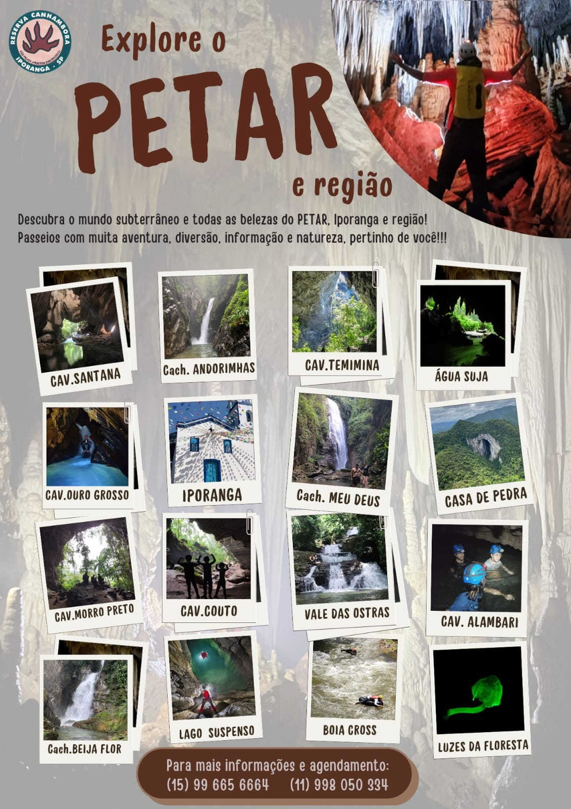
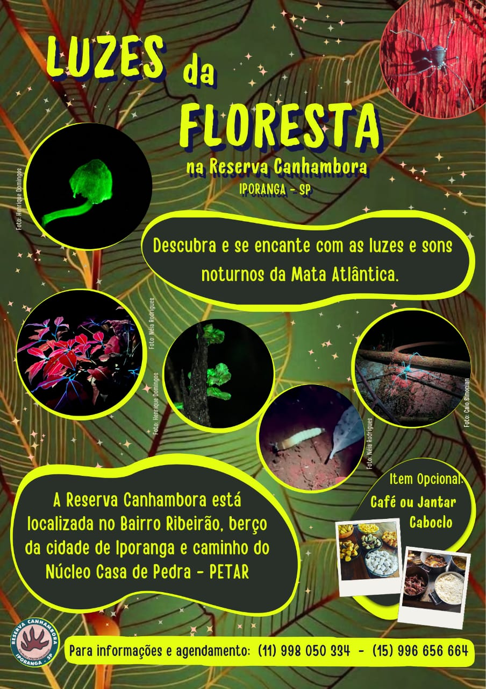
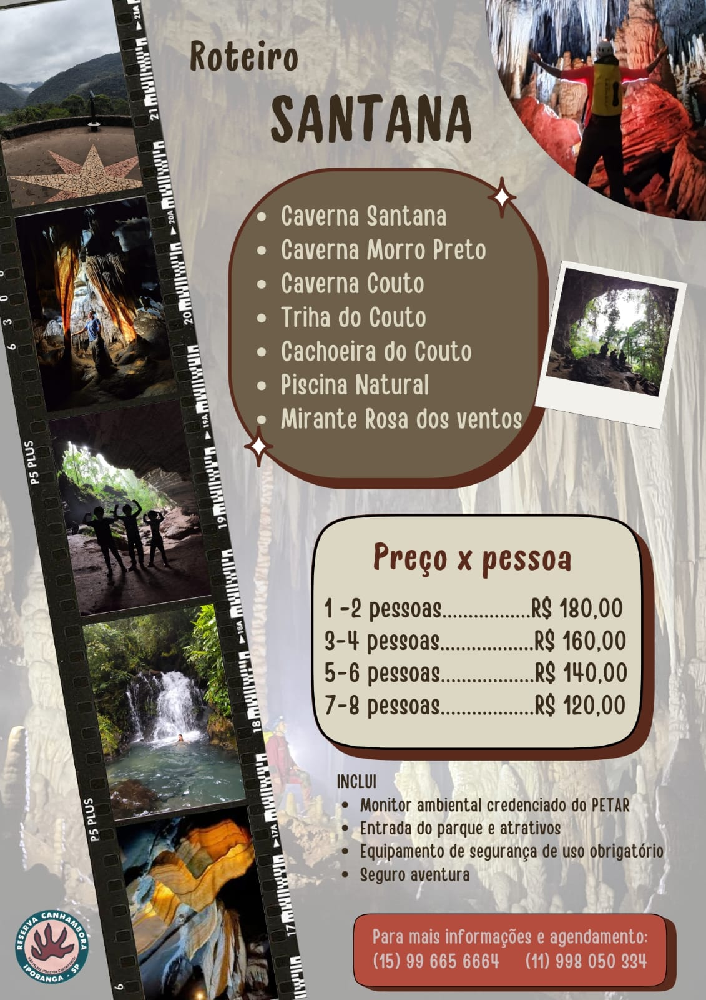
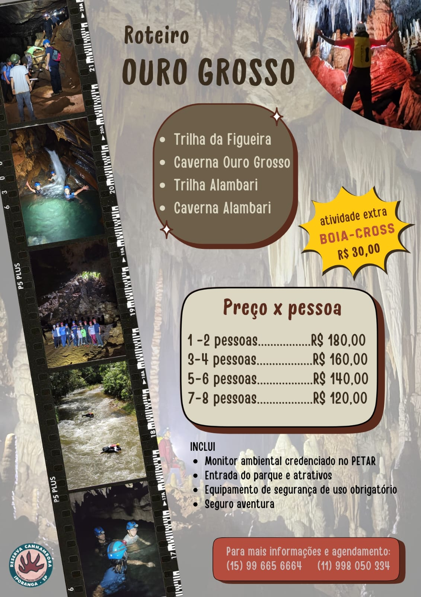
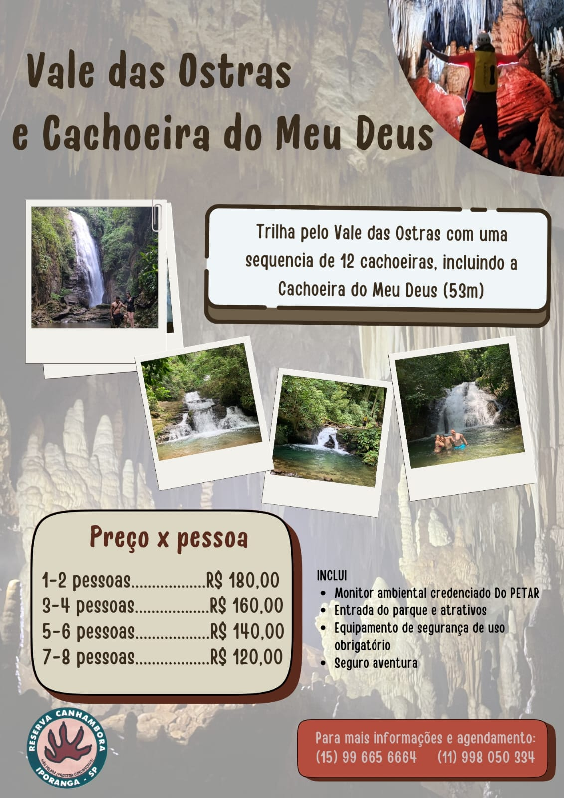
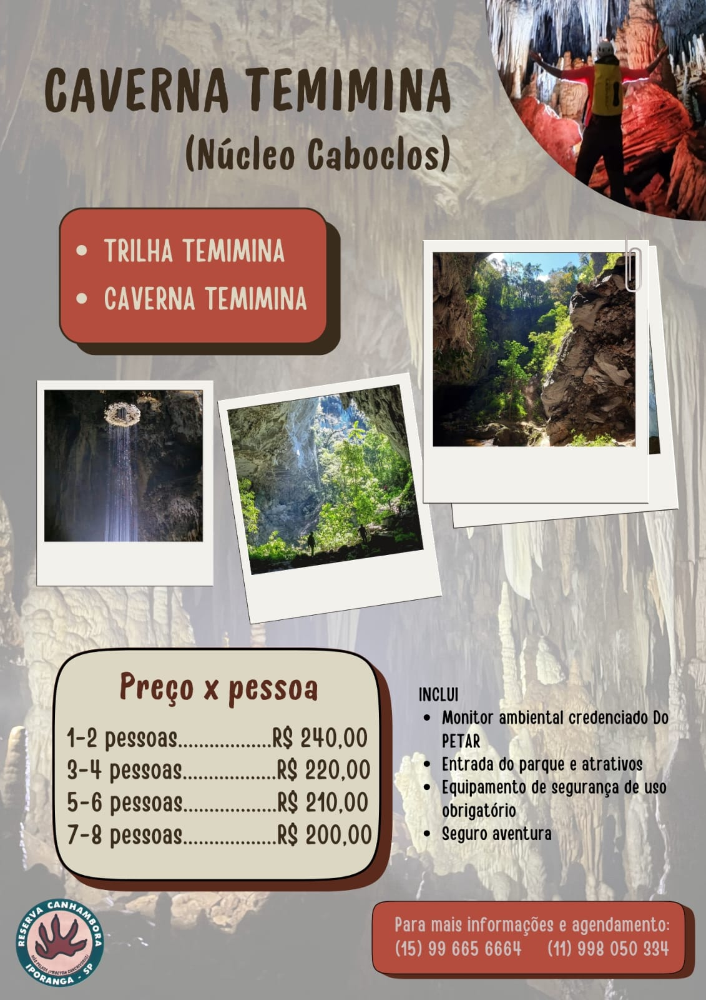
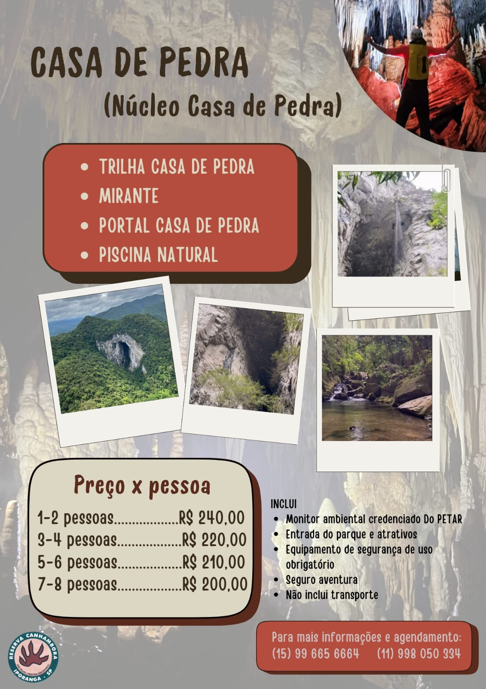
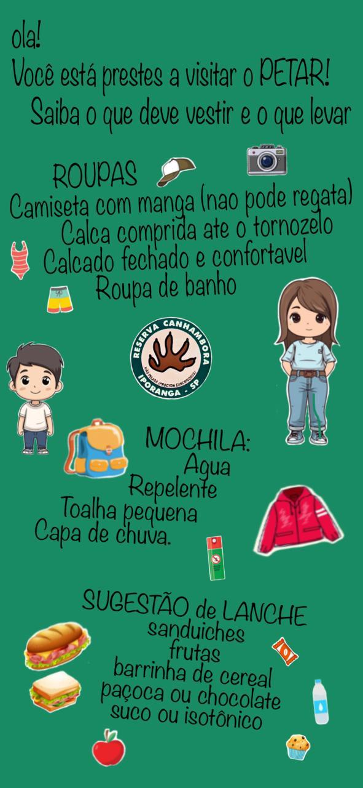

Efeito Pulando
Escolha entre nossos passeios disponíveis ou entre em contato conosco para que possamos criar juntos um roteiro personalizado, feito sob medida para atender suas preferências e tornar sua experiência inesquecível.







